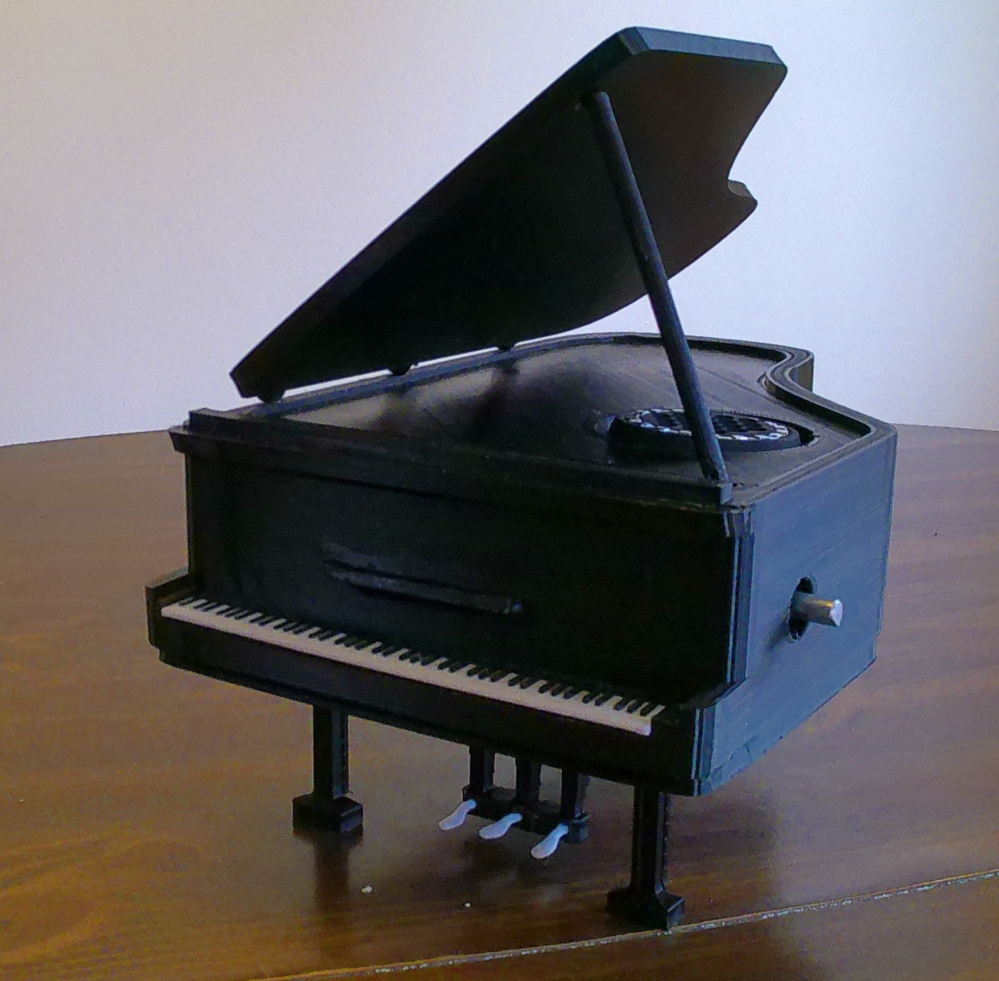
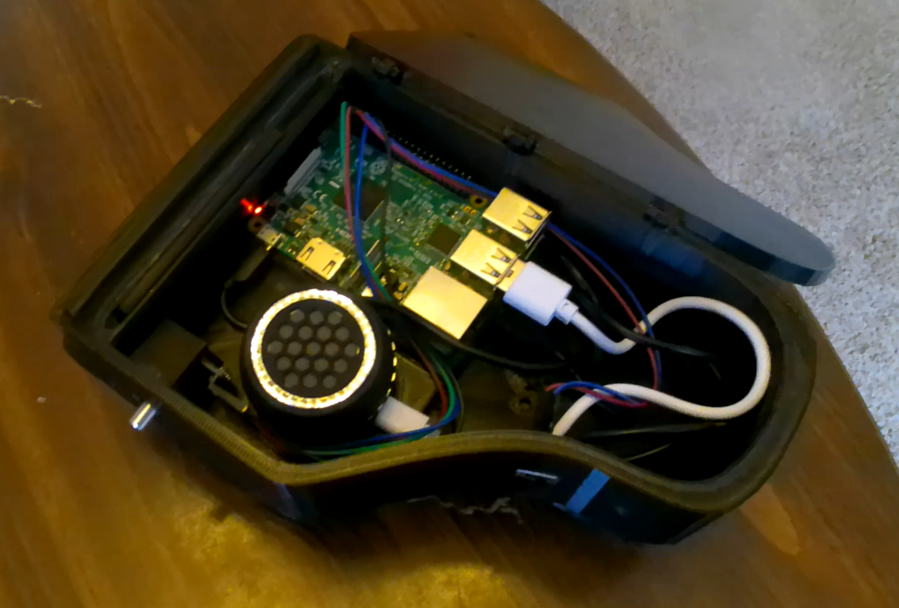
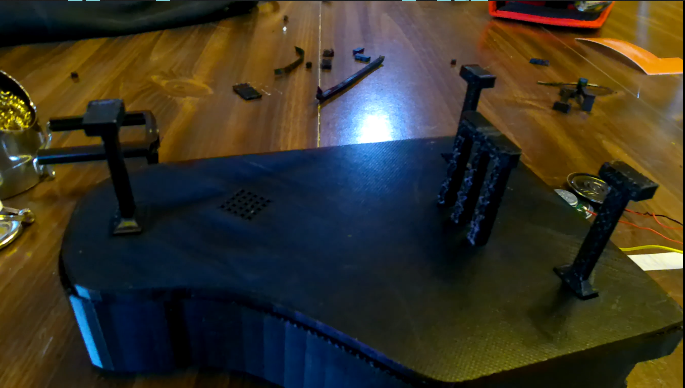

The Little Piano
A present to the Assistant Dean of Northwestern University's Bienen School of Music. This little piano has the capability to infinitely compose and play concert music. It was designed in Blender 2.8, and printed using PLA filament. The background video is a wireframe render of the model, and was used with similar mechanics in LVCK's predecessor, The Piano Machine .



